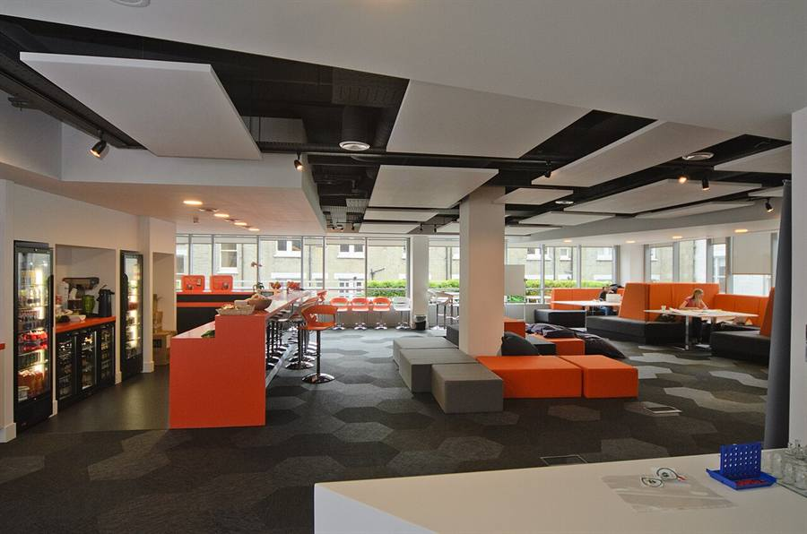

Digital Nomad Guide to Montenegro 2026: Coworking, Coliving, Costs & Community
Montenegro has quietly become one of Europe's best-kept secrets for remote workers. Lower costs than Spain or Portugal, euro currency without EU paperwork, fibre internet on most of the coast, a digital nomad visa, and a community that is small but growing fast. This is the practical guide: where to work, where to live, how much it costs, and where to find your people.

Why Montenegro for remote work?
- Costs 30–50% lower than Western Europe for similar Mediterranean climate.
- Euro currency — Montenegro is not in the EU, but uses the euro. No conversion friction.
- English widely spoken on the coast, especially in Tivat and Kotor.
- Russian very common since 2022, particularly in Budva, Bar and Tivat.
- Stable fibre internet on the coast (80–200 Mbps typical; 300–600 Mbps in major colivings).
- Digital nomad visa programme since 2023 for longer stays.
- Small enough to explore by car — coast to north in 3 hours.
- Mediterranean food + mountain food without flying.
Visa and stay length
Most EU, UK, US and CIS passport holders enter Montenegro visa-free for 30 to 90 days, depending on nationality. For longer stays:
- Digital Nomad Visa — launched in 2023, allows remote workers from approved countries to stay up to 2 years renewable. Apply via the Ministry of Interior. Requires proof of remote employment or self-employment, monthly income above the local threshold, valid health insurance, and a clean criminal record.
- Residence permit (privremeni boravak) — the traditional route via property rental contract, company employment or company ownership. More complex but well-trodden.
- Border run — historically common for short top-ups; less reliable post-2023 with the visa programme available.
Always check the current rules with your local Montenegrin embassy or a Podgorica-based immigration lawyer before relying on any single source.
Coworking spaces in Montenegro
| Space | City | Day pass | Best for |
|---|---|---|---|
| Playworking | Luštica | n/a (coliving) | Coliving with private en-suite, 600 Mbps, free SUPs/bikes, community. |
| Kotor Nest Coliving | Kotor Old Town | ~€15 | UNESCO old-town address, 4.7★/130 reviews, 3+ events/week. |
| Innovation Centre Tivat | Tivat | €8–15 | Government-backed, sometimes free programmes. |
| Innovation Centre Porto Montenegro | Tivat marina | €10–18 | Marina district, modern setting. |
| Shipyard Coworking | Tivat town | ~€10 | Independent, occasional creative events. |
| Creative Hub Podgorica | Podgorica | €8 (or €100–150/month) | Most established space in the country. |
| Digitalization Center | Podgorica | Free for some programmes | Government-supported, check current schemes. |
| Coworking Budva, Sky Hub | Budva | €10–20 | Seasonal options, busier in summer. |
| Spaces (chain) | Tivat / Budva / Podgorica | Variable | Corporate, predictable, more expensive. |
Coliving in Montenegro
- Playworking (Luštica) — 4.5★, 60+ reviews, 7 private en-suite rooms, 600 Mbps fibre, free SUPs and bikes, weekly shared dinners, free Tivat Airport pickup. From €800/month. Run by Jeffrey, house dog Brownie. playworking.me. → Read our first-person review (June 2026, from inside the house).
- Nomadico x Kotor Nest (Kotor) — first coliving in the Balkans (2019), 4.7★ / 130 reviews, 12 private + 2 shared rooms inside Kotor old town, 3+ events per week. From €980/month. nestcoliving.me
- Pachamama Farm Retreat (near Kotor) — slow farm-coliving in a 100-year-old stone house. Best for slow travellers, families, creatives, and retreat-style stays.
Cost of living for nomads — verified June 2026
| Item | Tivat / Kotor / Budva | Podgorica | Bar / Herceg Novi |
|---|---|---|---|
| 1-bed apartment (long-term) | €600–1000 | €450–700 | €400–700 |
| 1-bed apartment (Jul–Aug) | €1000–1800 | €500–800 | €700–1200 |
| Coliving room | €800–1500 | — | — |
| Coffee at local café | €1.50–2.50 | €1.20–2 | €1.50–2 |
| Sit-down dinner (konoba) | €15–25 | €10–18 | €12–22 |
| Local taxi ride | €5–15 | €3–8 | €4–10 |
| Gym monthly | €30–50 | €25–40 | €25–40 |
| 30 GB SIM | €10–15 | €10–15 | €10–15 |
| Realistic monthly total | €1500–2500 | €1100–1700 | €1200–1900 |
Best cities for nomads — compared
- Tivat — most international and English-friendly. Best balance of work setup, food, and easy day-trip access. Recommended for first-time Montenegro nomads. See the Tivat guide.
- Kotor — staggeringly beautiful, growing nomad community, good restaurants. Crowded in July–August. Best for short-to-medium stays in stunning surroundings.
- Luštica — peace, sea, slow living, the best coliving (Playworking). Best for nomads who want focus and outdoors over nightlife.
- Budva — busier, Russian-heavy, more nightlife. Less recommended for focus work but excellent for social calendar.
- Bar — flat, walkable, family-friendly, cheaper. Strong Russian community. Quieter scene.
- Podgorica — capital city, best coworking infrastructure, fewer tourists, more bureaucracy access.
- Herceg Novi — green, vertical, lived-in. Smaller nomad scene but a lovely base.
Community — how to plug in fast
- Facebook groups: Digital Nomads Montenegro · Expats in Montenegro (25 k+) · Foreigners in Montenegro · Montenegro Expat Community · Women of Montenegro · Tivat Ladies.
- Telegram: every city (Tivat, Kotor, Bar, Budva) has its own daily chat for taxi shares, buy/sell, kids, emergencies and meetups. Invite-only — ask in the Facebook groups for the link.
- InterNations Montenegro — recurring international socials, mostly Podgorica + occasional coast events.
- Polyglot Club Montenegro — language exchange. polyglotclub.com/montenegro
- Couchsurfing Hangouts — set status to "available today", see who's nearby. Small but active in season.
- Coworking events — every major space posts weekly events on Instagram. Show up.
- Sports as a meeting hack — yoga classes, hiking groups, the dock paddle group at 7 a.m. on Luštica.
English clubs, language exchange, board games
Formal weekly English clubs are rare on the coast. The practical route is informal: Polyglot Club, Tandem app, expat group meetups, coworking events. Tivat Coffee Mornings (typically Wednesdays via the Tivat Ladies Facebook group). Bar Game Nights — board games and trivia at local pubs, very active Russian/English crowd.
The Russian-speaking community in Montenegro
Since 2022, the Russian-speaking community on the Montenegrin coast has grown enormously. Concentrations in Budva, Bar and Tivat. Russian-language cafes, schools, kindergartens, hairdressers and small businesses are visible everywhere. Telegram is the centre — each city has chats for daily life, taxi shares, services, gatherings. To get invite links, post a polite request in Montenegro Expat Community on Facebook. Russophone stand-up comedy appears occasionally in Budva and Podgorica — events announced on Telegram 1–2 weeks ahead.
Frequently asked questions
Is Montenegro good for digital nomads?
Yes. Lower costs than Western Europe, euro currency without EU paperwork, English widely spoken on the coast, fibre internet on most apartments, and a digital nomad visa for longer stays.
Where is the best coworking in Montenegro?
In Tivat: Innovation Centre Tivat, Innovation Centre Porto Montenegro, Shipyard. In Kotor: Kotor Nest day passes. In Podgorica: Creative Hub Podgorica. On Luštica: Playworking coliving with 600 Mbps fibre.
What is the Montenegro digital nomad visa?
A programme that allows remote workers to stay longer than 90 days. Application via the Ministry of Interior with proof of remote work, income, insurance and a clean criminal record. Up to 2 years renewable.
How fast is internet in Montenegro?
Coast: 80–200 Mbps fibre typical, with 300–600 Mbps in major colivings. Mountains: lower and variable. Always confirm fibre at your specific apartment before signing.
Where do I find expat and nomad meetups?
Facebook (Digital Nomads Montenegro, Expats in Montenegro, Tivat Ladies). Telegram city chats via Facebook invite. InterNations monthly socials. Polyglot Club for language exchange. Coworking event calendars on Instagram.
Is the cost of living lower than Lisbon or Bali?
Roughly comparable to Bali, lower than Lisbon for similar quality. Realistic nomad budget: €1500–2500/month in Tivat or Kotor including coliving, food, transport and going out.
Can I work from cafés in Montenegro?
Yes, with care. Many cafés in Tivat, Kotor and Budva tolerate laptops outside peak hours. Strong wifi at Caffe Forte, Square Kafe, and the Aperitivo Bar in Porto Montenegro. Avoid the lunch rush.
Is Montenegro safe for solo female nomads?
Yes. One of the safest countries in the Balkans for solo female travel. Petty crime is rare, harassment is uncommon, walking the Pine promenade at night is normal.